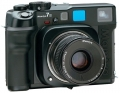

是Mamiya 7的改进型号，在原有机型的基础上增加了多次曝光功能，进一步扩大配套镜头系列，并研制开发一系列的摄影附件，照相机功能和操作都更为完善，成为在整个120型旁轴取景照相机中迄今为止配套镜头最为丰富，功能最为齐全的摄影机种，从而在竞争激烈的中等画幅照相机领域确定了稳固的地位。
Ken Rockwell說： \\\\\\\"如果只能帶一臺相機應付所有場面，我會選擇Mamiya7\\\\\\\"。 不敢想象這台機器在這裡評價居然這麼低，這是一臺在世界上普遍獲得攝影師好評的機身，也是無數仍在使用膠片的攝影師幹活的首選。看來這裡玩家還是多過用家。
最大的優點就是輕，一是機身輕，二是快門輕若無物。 手持1/15成功率極高，在普遍得和腳架做伴的中片幅中實屬難得。 極佳的鏡頭群，完備的功能，6x7的質素，重量跟表現得到最好的平衡。 以旁軸相機來說，功能強大齊全。 比起135DSLR還輕便，帶著它一整天的旅拍毫無壓力。
電子化的機身，對焦黃斑用一段時間會跑焦，需要送CLA。 沒什麼把玩性，比起哈蘇祿萊，用料做工都乏善可陳。但是mamiya的機身是用來幹活拍片的，不是拿來裝13把玩的。 哈蘇祿萊是玩家的玩物，專業攝影師幹活用mamiya。 機械表拿來彰顯品味把玩可以，真要精準可靠陪你上山下海，買隻電子表吧。
对120有便携性有要求的人可用。希望120的像质，但是又不希望每次使用三脚架的120相机。
镜头群可选择性强，43mm，150mm是值得尝试的。快门安静。所有旁轴的优点，但是比较大。握持性性好。可用135拍宽幅。
旁轴的缺点。做工比较山那个啥。
便携的利器，操作简便，适合远行的机器。
镜头出色，特别是43头，操作简便，在恶劣条件下都能拿的出手。 重亮轻。
外形不太美观，按门太轻。
輕便, 功能簡單的機器.
鏡頭質素不錯, 設計簡單, 理應不易故障.
錯頭光圈小了點. 把玩性不強.